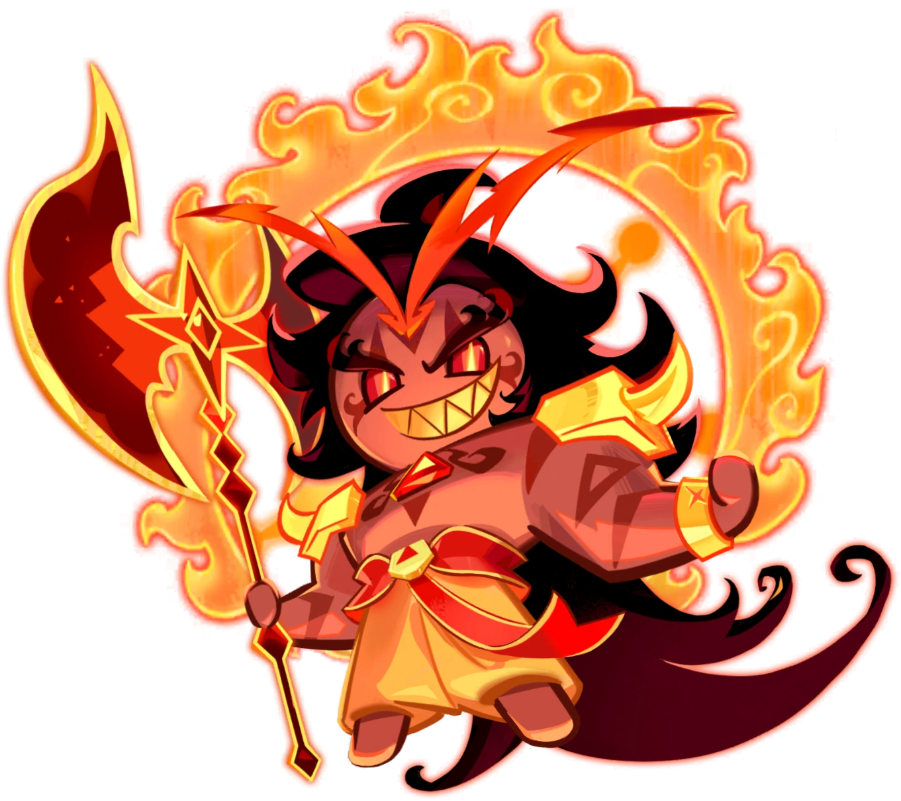
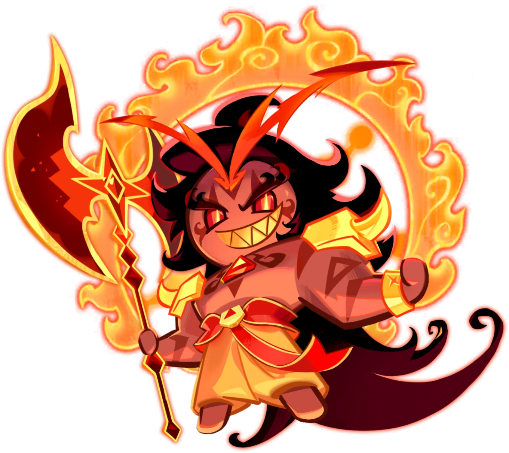

While the losers are doomed to be swallowed whole by the Tide of Change, victors bend it to their will! Once known as the Herald of Change, Burning Spice Cookie shaped the course of history, when history itself was young. He was hailed as a hero, a leader who fought battle after battle to protect the faint light of civilization shining amidst the gloom. But as time marched on and kingdoms rose and fell in an endless cycle, he grew weary—bored by the monotony of it all. In his heart, the seeds of destruction began to take root. His name, once celebrated, was replaced by whispers of the Great Destroyer. But empty praises and worship from Cookies meant nothing to him, as only destruction could make his jam boil! During his long confinement, he cursed the chains that bound him, aching to unleash chaos. But now, Burning Spice Cookie is free, unchained, and ready to carve a path of havoc. The world will tremble as the Great Destroyer rises once more... and nothing will be spared.